Come si usa il modulo, passo per passo, per le tre persone che ci lavorano: chi
esegue gli interventi, chi organizza il lavoro e chi configura il portale.
Ogni schermata è quella vera, con i pulsanti al posto in cui li trovi.
Per il manutentorePer il responsabilePer l'amministratoreAggiornata al 09/09/2026
1 Come è fatto il modulo
Quattro oggetti, in fila. Capiti questi, tutto il resto del modulo si spiega da sé.
AttivitàCosa si fa: «Cambio olio», con istruzioni e checklist.
→
PianoDove e con che frequenza: su quali macchine, ogni quanti giorni.
→
Scadenza«Il piano X va eseguito sulla macchina Y entro il Z». La genera il portale.
→
Intervento (OdL)Il lavoro vero: una o più scadenze raccolte in un'uscita sola.
Due conseguenze pratiche, che spiegano quasi tutti i «ma perché…» del modulo:
La scadenza non vive dentro l'intervento. Se togli una macchina da un
intervento che ne raccoglie cinque, la sua manutenzione non sparisce: torna
«da pianificare» e continua a comparire fra le cose dovute.
«Dovuta» e «pianificata» non sono la stessa cosa. Una manutenzione può
essere scaduta senza che nessuno abbia ancora aperto un intervento. È esattamente il
numero che il Cruscotto chiama Non pianificate.
Da sapere
Le scadenze le crea il portale ogni mattina alle 06:00. Raggruppare le scadenze in un
intervento resta una decisione umana: il sistema non apre un ordine di lavoro per ogni
macchina, altrimenti ne troveresti trecento aperti.
2 Dove si trovano le pagine
Il menu di sinistra divide il modulo in due rami: quello che si apre ogni giorno
e quello che si tocca una volta ogni sei mesi.
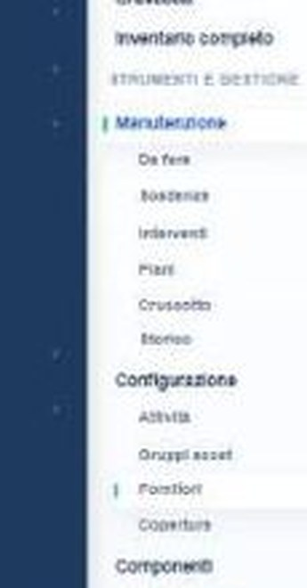
Manutenzione è il lavoro quotidiano. Configurazione è la messa a punto.
Voce
A cosa serve
Chi la usa
Da fare
Cosa va fatto, su quali macchine, entro quando
Manutentore
Scadenze
La vista temporale completa, con tutti i filtri
Responsabile
Interventi
La coda degli ordini di lavoro
Tutti
Piani
Cosa è pianificato, dove e con che frequenza
Responsabile / Amministratore
Cruscotto
Lo stato del modulo: cosa non va
Responsabile
Storico
Tutto ciò che è stato concluso
Responsabile
Attività
Il catalogo di cosa si può fare
Amministratore
Gruppi asset
Le famiglie di macchine su cui applicare i piani
Amministratore
Fornitori
Le ditte terze e cosa è affidato a loro
Responsabile / Amministratore
Copertura
Matrice macchine × piani: i buchi e i conflitti
Amministratore
Il mio turno sta più in alto, sotto Navigazione: è la prima
pagina che apre chi lavora sul campo.
3 I tre ruoli e i permessi
Non sono ruoli «nuovi»: sono tre permessi del pannello Accessi. Uno più alto
comprende quello più basso.
Ruolo 1
Manutentore
Esegue: registra le manutenzioni, allega i rapporti, apre i follow-up. Non decide
cosa va fatto, decide che è stato fatto.
assets · maintenance_execute
Ruolo 2
Responsabile
Organizza: crea gli interventi raccogliendo le scadenze, distribuisce le giornate,
toglie una macchina da un'uscita. Vede il carico di tutti.
assets · maintenance_planning
Ruolo 3
Amministratore di portale
Configura: attività, piani, periodicità, gruppi, fornitori, contratti. Decide cosa il
portale considera «dovuto».
assets · admin_assets
Come si concedono
I tre permessi si assegnano dal pannello Accessi del portale — vedi il
capitolo 21. Non serve essere amministratori di sistema per pianificare
o eseguire: sono permessi granulari, ed è così che devono essere usati.
4 Il mio turno · manutentore
La pagina con cui si comincia la giornata. Una coda sola, ordinata per urgenza.
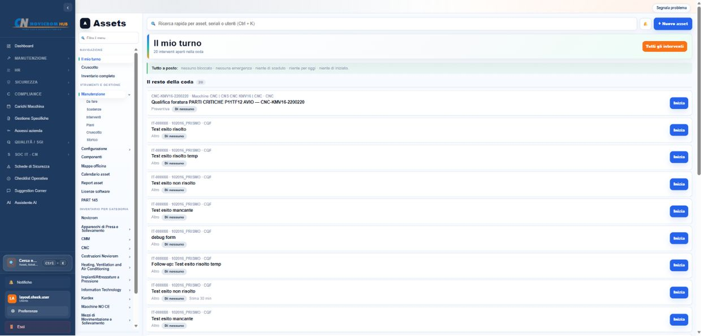
La riga verde in alto riassume ciò che non c'è: «nessuno bloccato · nessuna emergenza ·
niente di scaduto · niente per oggi · niente di iniziato». Le sezioni vuote non vengono stampate.
L'ordine delle sezioni è quello dell'urgenza reale, non alfabetico:
Bloccati / in attesa — interventi fermi per ricambi, fornitori o autorizzazioni. Vanno
guardati per primi perché qualcuno deve sbloccarli.
Emergenze — priorità dichiarata alta.
Scaduti — la data è passata.
Oggi — quello che è previsto per la giornata.
In corso — già iniziati da qualcuno, incluso te.
Il resto della coda — tutto il lavoro aperto che non rientra sopra.
La coda è di tutti
Un intervento senza assegnatario è marcato Di nessuno e compare nel
turno di chiunque. Non si «prende in carico»: si apre e si fa. L'intestazione
avviene alla chiusura, a chi chiude — e in quel momento potrai toglierla se stai
registrando il lavoro di un altro.
Il pulsante Inizia su ogni riga fa una cosa sola: segna che il lavoro
è partito, così gli altri lo vedono «In corso» e non ci si mette in due sulla stessa macchina.
5 Da fare · manutentore
Risponde a una domanda sola: cosa devo fare adesso.
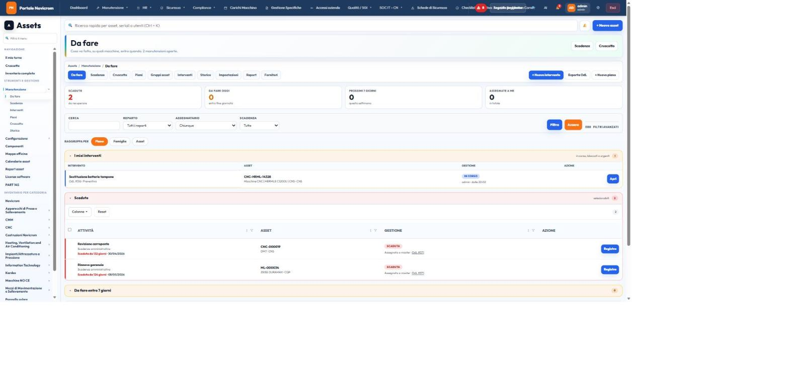
Quattro numeri, quattro filtri a vista, il raggruppamento e le sezioni per urgenza.
I quattro riquadri
Non misurano la salute del modulo (quello è mestiere del Cruscotto): misurano la tua giornata.
Ognuno è un filtro — cliccarlo restringe la lista sotto, non ti porta altrove.
Riquadro
Cosa conta
Scadute
Data superata. Da recuperare.
Da fare oggi
In scadenza entro fine giornata.
Prossimi 7 giorni
La settimana che hai davanti.
Assegnate a me
Quelle che hanno il tuo nome sopra.
Filtri
Quattro sono sempre visibili — Cerca, Reparto, Assegnatario, Scadenza —
gli altri stanno sotto Filtri avanzati. Non ne è stato tolto nessuno:
cambia solo cosa vedi per primo. Se un filtro avanzato è attivo, il pannello si apre da solo,
così una lista vuota non resta senza spiegazione.
Raggruppamento
Piano · Famiglia · Asset:
la stessa lista letta in tre modi. Serve a costruire un'uscita sola — «già che vado
al tornio, faccio tutto quello che scade lì». È chiuso di default perché è un secondo momento
rispetto al «cosa faccio adesso».
Le sezioni
Sotto ai filtri: Scadute, Da fare entro 7 giorni, Programmate,
In attesa, Esterne, e in fondo Raggruppate per piano. Ogni sezione si apre
e si chiude dal titolo, e la scelta viene ricordata.
La via breve
Il pulsante Registra su una riga chiude quella singola manutenzione
senza passare da un ordine di lavoro. È la strada giusta quando hai fatto una cosa sola.
6 Interventi · manutentore
La coda di tutti: apri un intervento, fallo e chiudilo — chiudendolo diventa tuo.
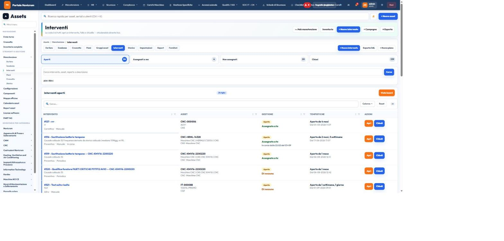
Quattro schede in cima e, per ogni riga, una sola azione per colonna:
Apri sempre, Chiudi su tutti gli interventi aperti.
Scheda
Cosa contiene
Aperti
Tutto il lavoro in corso, di chiunque sia.
Assegnati a me
Quelli intestati a te.
Non assegnati
Gli interventi «di nessuno»: sono di tutti.
Chiusi
L'archivio recente.
La colonna Tempistiche dice da quanto un intervento è aperto — «Aperto da 4 mesi» —
e non una scadenza: gli ordini di lavoro in genere non ne hanno una.
In alto a destra: Nuovo intervento per aprirne uno a mano,
Campagna per aprirne uno che tocca molte macchine insieme,
Esporta per portare la lista in Excel.
7 Dentro un intervento · manutentore
Tutto quello che serve per farlo, e il posto dove si registra ciò che è stato fatto.
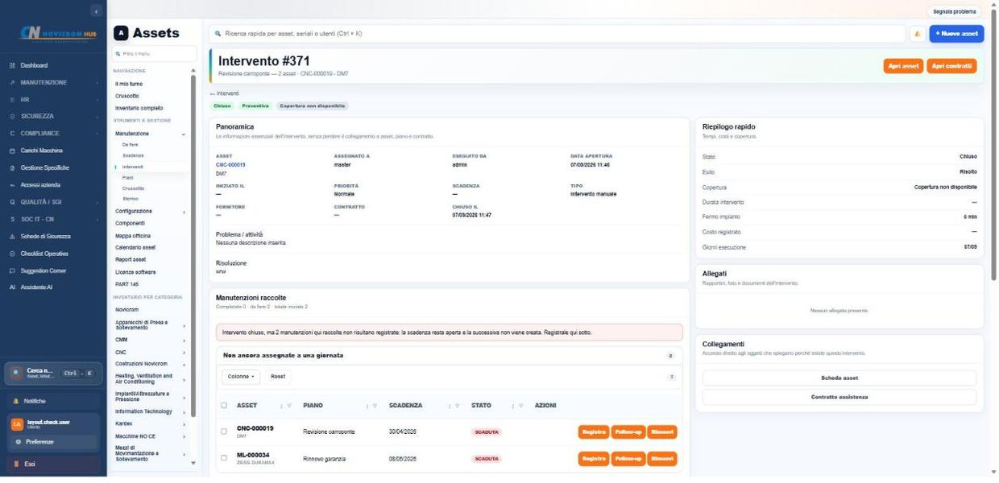
A sinistra la Panoramica e le Manutenzioni raccolte; a destra il
Riepilogo rapido, gli allegati e i collegamenti alla scheda macchina e al contratto.
Manutenzioni raccolte
È il pannello che spiega perché quell'intervento esiste. L'intestazione conta
completate · da fare · totale iniziale, così si vede a colpo d'occhio quanto manca.
Per ogni riga tre azioni:
Registra — chiude quella manutenzione e fa nascere la prossima scadenza.
Follow-up — hai trovato un'anomalia: apre un secondo intervento collegato.
Rimuovi — toglie la macchina da questa uscita senza chiudere
la sua manutenzione: torna fra quelle da pianificare.
Attenzione Chiudere l'intervento non registra le manutenzioni che raccoglie. Se ne restano di
aperte, il portale te lo dice in rosso — come nella figura — perché altrimenti quelle scadenze
resterebbero scadute in silenzio e la successiva non nascerebbe mai.
Più in basso nella pagina: Checklist operativa (gli step da spuntare, con valore e foto
quando previsti), Note operative (ogni nota resta legata a data, ora e autore) e
Allegati.
8 Registrare più manutenzioni insieme · manutentore
Quando un'uscita ha toccato dieci macchine, non si compilano dieci moduli.
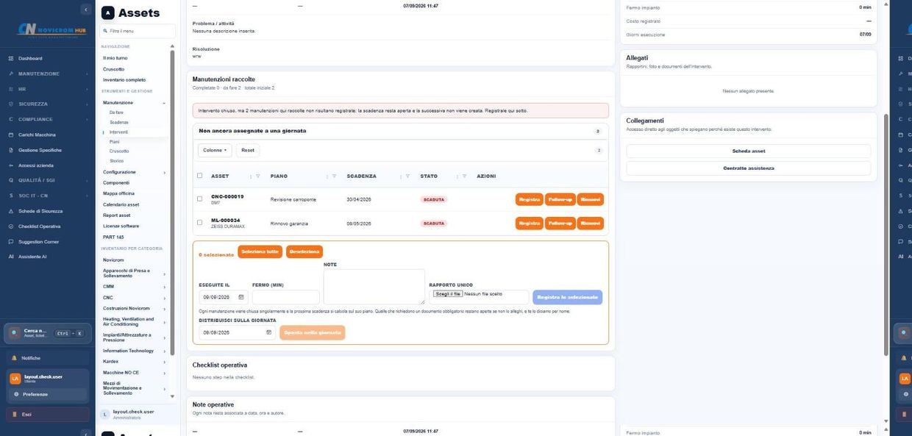
Selezioni le righe, dichiari una volta sola giorno, fermo, note ed eventuale
rapporto, e premi Registra le selezionate.
Seleziona le macchine su cui hai effettivamente lavorato — o
Seleziona tutte.
Compila la riga sotto: Eseguite il (la data vera dell'intervento, non quella di oggi
se hai lavorato ieri), Fermo (min), Note, e un Rapporto unico se ne hai uno solo
per tutte.
PremiRegistra le selezionate.
Come funziona davvero
Dichiari i dati una volta, ma ogni manutenzione viene chiusa singolarmente e la sua
prossima scadenza è calcolata sul suo piano: una che va ogni 30 giorni e una ogni 180 non
finiscono alla stessa data. Quelle che richiedono un documento obbligatorio vengono
saltate e ti vengono dette per nome — non spariscono in silenzio.
Distribuire su più giornate
Se l'uscita si spalma su due o tre giorni, Distribuisci sulla giornata
sposta le righe selezionate nel giorno che indichi. Il pannello poi le raggruppa per giornata,
e lo storico riporta i giorni effettivi.
9 Chiudere l'intervento · manutentore
Tre passaggi numerati. Solo il primo e il terzo sono obbligatori.
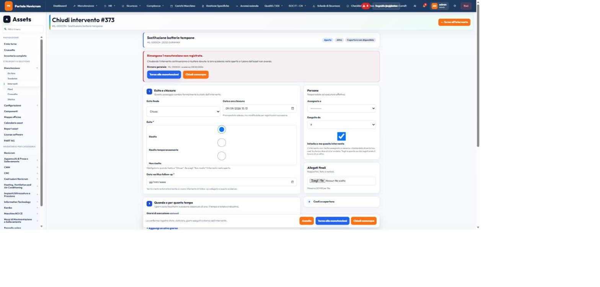
Passo 1: esito e persone. La casella «Intesta a me questo intervento» compare solo
sugli interventi di nessuno ed è già spuntata.
Esito e chiusura.Esito finale è lo stato dell'intervento. Esito è come è
andata: Risolto, Risolto temporaneamente,
Non risolto. Se scegli una delle ultime due il portale chiede una
data di verifica e crea da solo un intervento di follow-up collegato: il problema non
si perde.
Persone.Eseguito da è chi ha fatto il lavoro. Se stai registrando il lavoro di
un collega, togli la spunta «Intesta a me» e metti il suo nome.
Quando e per quanto tempo. Facoltativo: giorni di esecuzione (possono essere più di uno),
tempo indicativo, fermo impianto.
Risoluzione. Cosa hai fatto e con che risultato. Obbligatoria se l'esito
finale è «Chiusa».
PremiChiudi definitivamente.
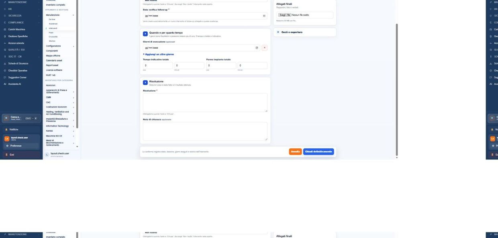
I passi 2 e 3, con il pulsante di conferma sempre visibile in fondo.
Vale la pena compilarli Tempo e fermo impianto sono facoltativi, e oggi quasi nessuno li compila: sui dati veri
il tempo risulta registrato su meno dell'1% degli interventi. È per questo che il portale
non mostra MTTR, disponibilità impianti o spesa di manutenzione — non perché non sappia
calcolarli, ma perché non ha i numeri. Ogni campo compilato in chiusura è un indicatore che si
accende più avanti.
10 Cruscotto operativo · responsabile
Nove numeri che dicono cosa non va. Sotto, le liste per andarci dentro.
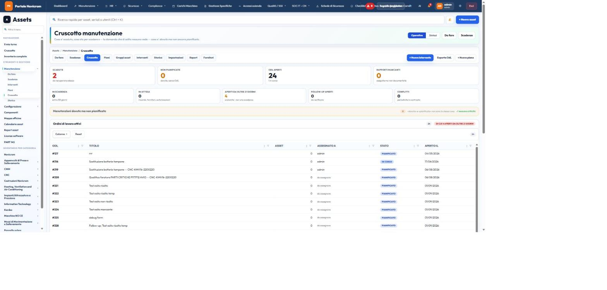
In alto a destra l'interruttore Operativo /
Sintesi: due letture della stessa pagina, stesso indirizzo.
Numero
Cosa conta davvero
Scadute
Manutenzioni con la data superata, ancora aperte.
In scadenza
Dentro la finestra di preavviso del loro piano.
Non pianificate
Dovute, ma senza un ordine di lavoro. È la domanda che di solito nessuno vede.
OdL aperti
Tutti gli ordini aperti, correttivi compresi — non solo quelli nati da un piano.
In attesa
Fermi per ricambi, fornitori, autorizzazioni.
OdL in ritardo
Aperti da oltre la soglia (di serie 21 giorni). Vedi la nota qui sotto.
Rapporti mancanti
Eseguite ma non documentate: il lavoro è fatto, la pratica no.
Follow-up aperti
Anomalie trovate e non ancora richiuse.
Conflitti
Stesso asset, due periodicità in contrasto.
Da leggere bene «OdL in ritardo» misura l'anzianità, non un ritardo. Gli ordini di lavoro in pratica
non hanno una scadenza valorizzata: quello che si conta è da quanti giorni sono aperti, oltre
la soglia condivisa (assets_wo_overdue_days, di serie 21). La riga sotto al numero
lo dice: «aperti da oltre 21 gg».
Le sezioni sotto ai numeri — manutenzioni dovute ma non pianificate, ordini attivi, rapporti
mancanti, follow-up, conflitti — si comprimono a una riga quando sono vuote.
Il vuoto è una buona notizia e va detto in fretta.
11 Carico manutentori · responsabile
Chi ce l'ha in mano, e quanto lavoro non è di nessuno.
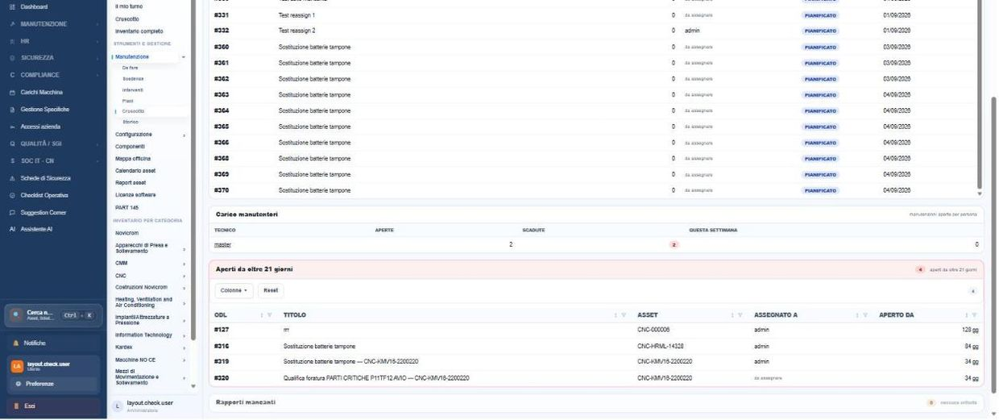
Tecnico · Aperte · Scadute · Questa settimana. Ogni nome è cliccabile e porta a
«Da fare» già filtrato su quella persona.
La riga «Non assegnate» è staccata dalle altre e messa in evidenza, perché è la
domanda che conta: quel lavoro non è di nessuno, e qualcuno deve andarci. Raccoglie sia le
manutenzioni senza ordine di lavoro sia quelle dentro un ordine che non ha ancora un
assegnatario — per chi organizza sono lo stesso problema.
Subito sotto trovi Aperti da oltre N giorni con la colonna «Aperto da» in giorni, e
Rapporti mancanti.
12 Vista Sintesi · responsabile / direzione
Come sta andando, non cosa fare adesso. Stesso indirizzo, un interruttore.
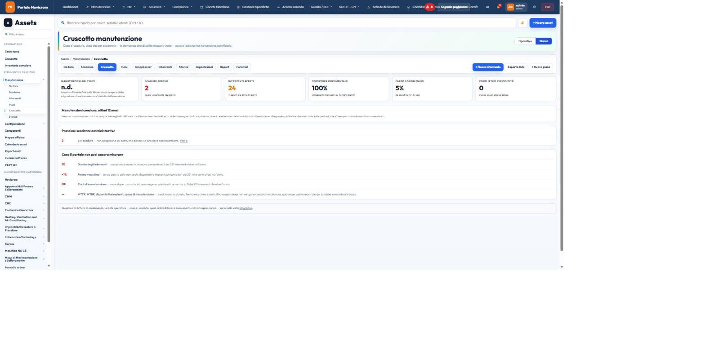
Sei indicatori di andamento, il grafico dei 12 mesi e — sotto — l'elenco esplicito
di ciò che non è misurabile.
Indicatore
Come si legge
Manutenzioni nei tempi
Quota conclusa entro la scadenza, ultimi 12 mesi.
Scadute adesso
Con l'anzianità della più vecchia: una scaduta di ieri e una di due anni fa non sono lo stesso problema.
Interventi aperti
Di cui quanti oltre la soglia di anzianità.
Copertura documentale
Quante delle eseguite hanno il rapporto (ultimi 120 giorni).
Parco con un piano
Quanti asset in uso hanno almeno un piano applicato.
Conflitti di periodicità
Stesso asset, due cadenze in contrasto.
Perché a volte «Manutenzioni nei tempi» dice n.d.
Perché la puntualità si misura solo dove scadenza ed esecuzione sono due eventi distinti.
Nelle manutenzioni migrate dal vecchio sistema la scadenza è stata dedotta dalla data di
esecuzione: risultano puntuali per costruzione. Contarle darebbe un bel 100% che non significa
niente. Quando la base misurabile è troppo piccola, il portale scrive n.d. e spiega
il motivo, invece di stampare una percentuale che sembrerebbe una statistica.
«Cosa il portale non può ancora misurare»
Il riquadro in fondo non è una scusa: è un elenco con dei numeri. Per durata, fermo macchina e
costi dice su quanti interventi chiusi quel campo è compilato davvero. Finché quelle
percentuali restano all'1%, MTTR, MTBF, disponibilità impianti e spesa di manutenzione non
vengono mostrati — un grafico piatto a zero sembrerebbe un risultato.
Chi apre cosa
Chi non può né pianificare né eseguire (tipicamente la direzione) apre direttamente sulla
Sintesi: le liste operative non gli servono. Chiunque può comunque passare all'altra vista
con l'interruttore — la scelta esplicita vince sempre.
13 Scadenze · responsabile
La vista temporale completa: ordinarie e amministrative insieme, perché per chi
le deve rispettare sono la stessa cosa.
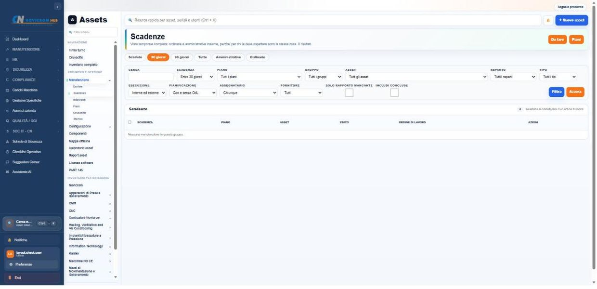
Le finestre in alto, e sotto tutti i filtri: piano, gruppo, asset, reparto, tipo,
esecuzione, pianificazione, assegnatario, fornitore.
Finestra
Cosa mostra
Scadute
Data già superata, ancora aperte.
30 / 90 giorni
Da oggi a fra 30 o 90 giorni. Solo aperte.
Tutte
Tutte le future.
Amministrative / Ordinario
Le due nature separate.
Perché «30 giorni» a volte è vuoto
Perché è una vista operativa: mostra ciò che scade da qui a 30 giorni ed è ancora aperto.
Se il lavoro è in pari, è giusto che sia vuota. Le manutenzioni già concluse stanno nello
Storico; se le vuoi dentro la stessa finestra c'è il filtro avanzato
Includi concluse.
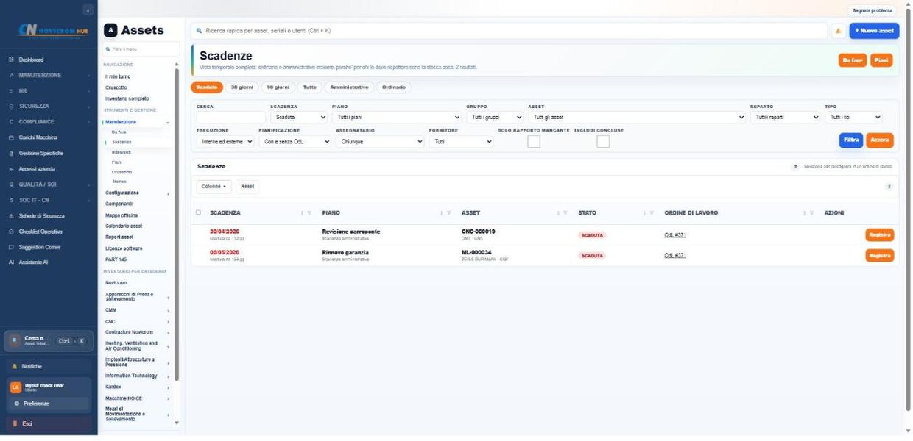
Ogni riga dice da quanti giorni è scaduta, su quale asset, con quale stato e
l'eventuale ordine di lavoro collegato.
Raccogliere più scadenze in un intervento
Filtra quello che vuoi raccogliere: per reparto, per piano, per macchina.
Spunta le righe con le caselle a sinistra (la casella in testa seleziona tutto).
Compila il pannello che compare — Titolo, Assegna a, Ditta esterna se il
lavoro va fuori, Entro — e premi Crea ordine di lavoro: nasce
un solo intervento con dentro tutte le manutenzioni scelte.
Da lì in poi l'intervento vive nella pagina Interventi, e il manutentore
registra le righe man mano.
14 Storico · responsabile
Una cronologia sola per ordini di lavoro conclusi e ticket di manutenzione.
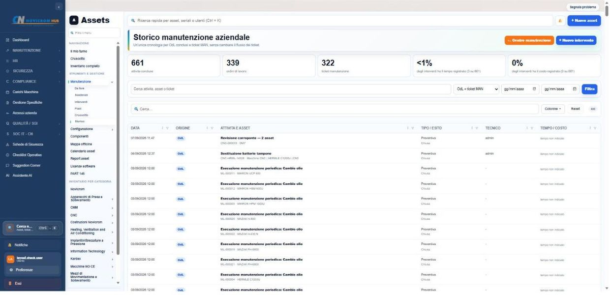
I due indicatori a destra non sono totali: sono coperture. Dicono su quanti
interventi il dato esiste davvero.
I primi tre numeri sono conteggi: attività concluse, di cui ordini di lavoro e ticket. Gli
ultimi due sono la parte onesta della pagina:
Se il dato è compilato su una quota sufficiente, vedi il totale e la pagina dichiara
su quanti interventi poggia.
Se è compilato su pochissimi, vedi solo la copertura — «<1% degli interventi ha il
tempo registrato (3 su 661)». Un totale calcolato sull'1% non diventa affidabile
aggiungendoci un'avvertenza.
Sotto: ricerca libera, filtro per origine (OdL, ticket o entrambi) e intervallo di date. La
tabella riporta data, origine, attività e asset, tipo/esito, tecnico e tempo/costo.
15 Fornitori · responsabile
Le ditte terze collegate alla manutenzione — e per ognuna, cosa le è affidato.
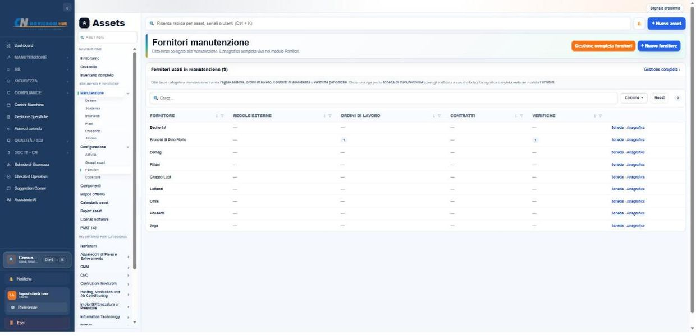
Per ogni ditta: regole esterne, ordini di lavoro, contratti, verifiche. La riga porta
alla scheda di manutenzione; Anagrafica porta al modulo Fornitori.
L'elenco comprende anche i fornitori catalogati come «Manutenzione» che non hanno ancora nulla
collegato: compaiono con i conteggi a zero, pronti da assegnare.
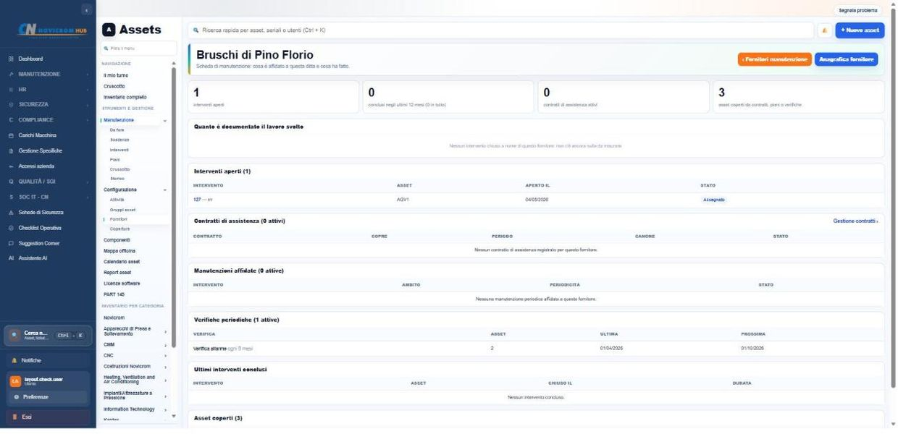
La scheda: interventi aperti, conclusi negli ultimi 12 mesi, contratti attivi, asset
coperti — e sopra a tutto, quanto è documentato il lavoro svolto.
La scheda raccoglie in una pagina sola quello che prima richiedeva quattro pagine filtrate a
mano: contratti di assistenza (periodo, cosa coprono, canone, se sono in corso),
manutenzioni affidate con ambito e periodicità, verifiche periodiche con la prossima
scadenza, interventi aperti e ultimi conclusi, asset coperti.
Perché non c'è la spesa
Perché il costo è compilato su una frazione minima degli interventi chiusi. Un totale stampato
lì sembrerebbe «quanto abbiamo speso con questa ditta nell'anno» e sarebbe una cifra inventata
al ribasso. Il riquadro dichiara la copertura di durata, fermo macchina e costo: quando quei
campi verranno compilati, il totale comparirà da solo.
L'anagrafica del fornitore — dati fiscali, contatti, documenti, valutazioni — resta nel modulo
Fornitori: qui non si modifica nulla, si guarda il rapporto di lavoro.
16 Attività — il catalogo · amministratore
Cosa si può fare. Si definisce una volta e si riusa su tutte le macchine.
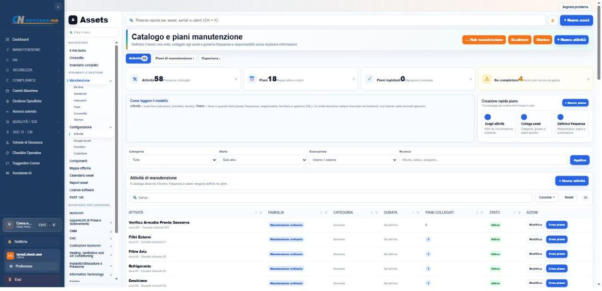
In cima i numeri del catalogo, poi la scorciatoia «creazione rapida piano» in tre
passaggi, i filtri e la tabella delle attività.
Un'attività descrive il lavoro: istruzioni, checklist, durata, se richiede un
documento obbligatorio, se è interna o esterna. Non dice su quali macchine va fatta né
ogni quanto: quello è il piano.
Nuova attività — le dai un nome parlante («Cambio olio», non «Manut. 03»), la famiglia
e la categoria.
Definisci la checklist, se serve: gli step che il manutentore spunterà sul campo, con
valore atteso o foto quando previsto.
Crea piano dal pulsante sulla riga: è la scorciatoia che collega l'attività alle
macchine e alla frequenza, senza passare da tre pagine.
La colonna Piani collegati dice quante volte l'attività è già in uso. Un'attività a zero
piani è un pezzo di catalogo che non produce nulla: o va collegata, o va disattivata.
17 Piani e applicazioni · amministratore
Il piano dice cosa va fatto. L'applicazione dice dove e con che tempi.
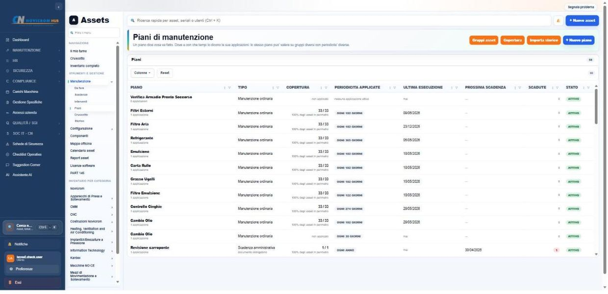
Copertura è il rapporto fra asset raggiunti e asset in perimetro — «33 / 33,
100% degli asset in perimetro» — non sull'intero parco: «32 su 400» non direbbe nulla.
Colonna
Cosa dice
Copertura
Quanto il piano è completo sugli asset che tocca davvero.
Periodicità applicate
Le cadenze in uso: lo stesso piano può valere ogni 182 giorni su un gruppo e ogni 365 su un altro.
Ultima esecuzione
Quando è stato eseguito l'ultima volta. «mai» è un segnale.
Prossima scadenza / Scadute
Lo stato di salute del piano.
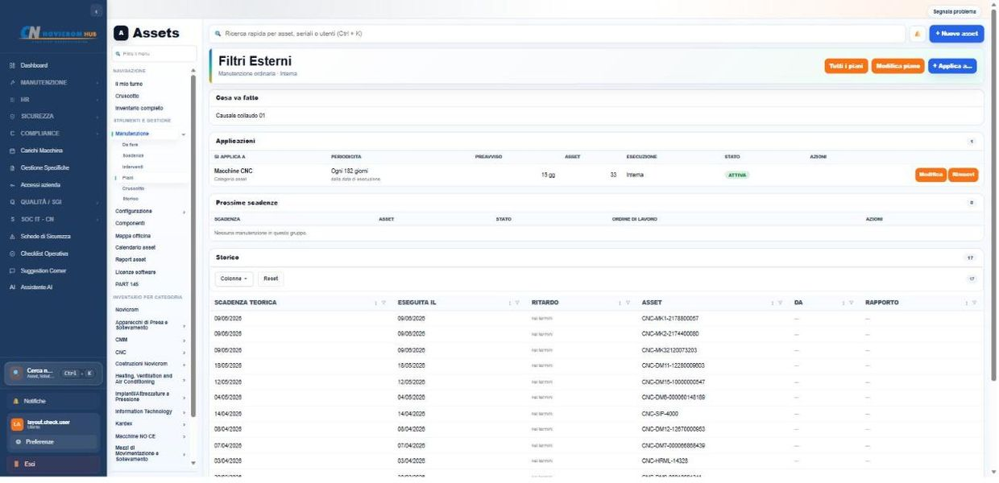
Dentro il piano: cosa va fatto, le applicazioni, le prossime scadenze e lo
storico delle esecuzioni con lo scostamento rispetto alla scadenza teorica.
Aggiungere un'applicazione
Apri il piano e premi + Applica a….
Scegli il bersaglio: una categoria di asset, un gruppo, o singole macchine. La
precedenza è asset > gruppo > categoria: più è specifico, più vince.
Imposta la periodicità — solo di calendario: giorni, settimane, mesi, anni, trimestre,
semestre, «primo lunedì del mese», «ultimo giorno del mese», annuale a data fissa.
Preavviso: quanti giorni prima la scadenza deve comparire come «in scadenza».
Ancoraggio: la manutenzione ordinaria riparte dalla data di esecuzione; la scadenza
amministrativa resta ancorata alla scadenza teorica — rinnovare una polizza in ritardo
non deve spostare in avanti tutti gli anni successivi.
Conflitti
Se due gruppi impongono periodicità diverse alla stessa macchina, il portale dichiara il
conflitto invece di sceglierne una in silenzio. Lo trovi nel Cruscotto e nella
matrice di copertura, e si risolve personalizzando il piano su quella macchina.
Manutenzioni a contatore
Ore, chilometri e cicli sono modellati ma fuori dal flusso operativo: senza letture
attendibili producevano scadenze false presentate come verdi. Le periodicità in uso sono di
calendario.
18 Gruppi asset · amministratore
La famiglia operativa che la categoria non sa dare.
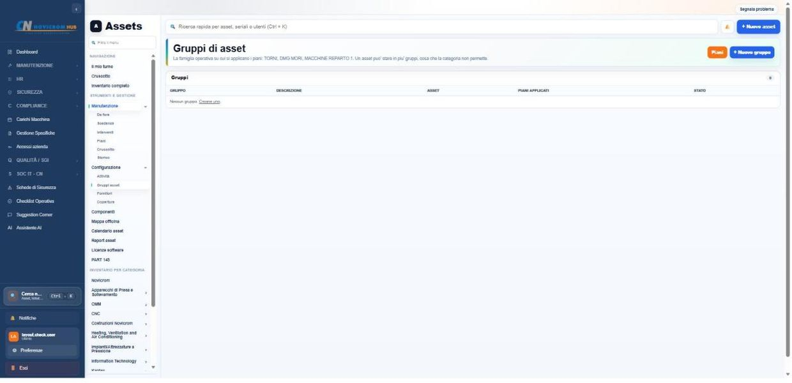
Nell'ambiente di prova non ci sono ancora gruppi: la pagina mostra lo stato vuoto con
l'invito a crearne uno.
Un gruppo è un insieme di macchine su cui applicare gli stessi piani: TORNI,
DMG MORI, MACCHINE REPARTO 1. Serve perché una macchina può stare in più
gruppi, mentre la categoria d'inventario è una sola — e le esigenze di manutenzione non
seguono la classificazione contabile.
+ Nuovo gruppo, dai un codice e un'etichetta leggibile.
Aggiungi le macchine al gruppo.
Applica i piani al gruppo, non alle singole macchine: quando entra una macchina nuova,
basta aggiungerla al gruppo e si porta dietro tutto il piano di manutenzione.
19 Copertura · amministratore
Macchine per piani: i buchi e i conflitti si vedono qui, senza aprire una scheda alla volta.
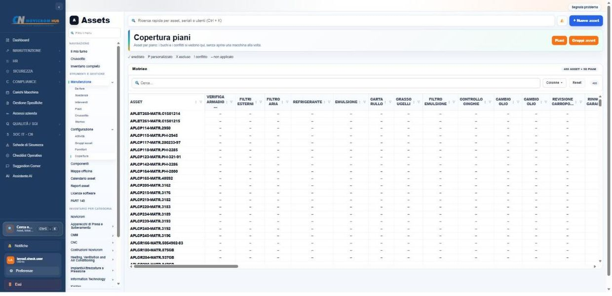
Una riga per macchina, una colonna per piano. La legenda è in cima alla pagina.
Simbolo
Significa
✓ ereditato
Il piano si applica per categoria o per gruppo.
P personalizzato
Su questa macchina la periodicità è stata cambiata a mano.
X escluso
La macchina è stata esclusa esplicitamente dal piano.
! conflitto
Due regole si contraddicono: va risolto.
– non applicato
Nessuna regola. Se è una macchina che andrebbe manutenuta, è un buco.
È la pagina da guardare dopo ogni cambio di configurazione: una colonna tutta «–» significa un
piano che non produce scadenze, una riga tutta «–» una macchina che nessuno sta manutenendo.
20 Contratti di assistenza · amministratore
Chi copre cosa, con che finestra di validità.
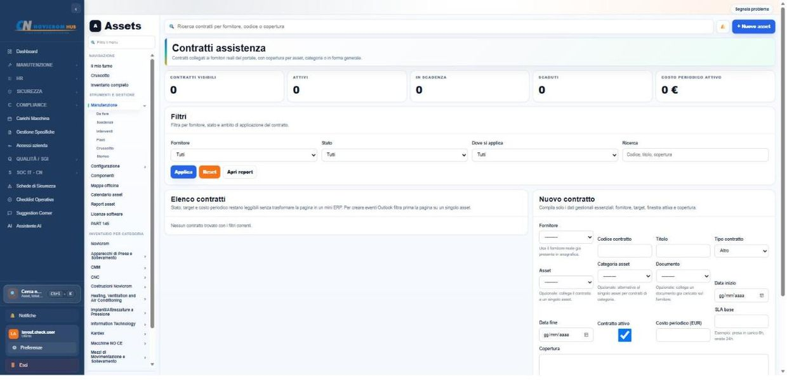
A sinistra l'elenco filtrabile, a destra il modulo per un nuovo contratto.
Fornitore — dalla stessa anagrafica del portale, non un nome scritto a mano.
Dove si applica — un singolo asset oppure un'intera categoria: sono alternativi.
Finestra — data inizio e data fine. Senza data fine il contratto è a tempo indeterminato.
Canone e SLA — facoltativi; il canone compare nella scheda fornitore solo se valorizzato.
Copertura — cosa comprende, in parole.
Un contratto attivo e nel periodo si vede nella scheda del fornitore come «in corso»; scaduto o
fuori finestra viene marcato, non nascosto.
21 Permessi · amministratore
Tre codici, concessi dal pannello Accessi. Nessun ruolo nuovo da inventare.
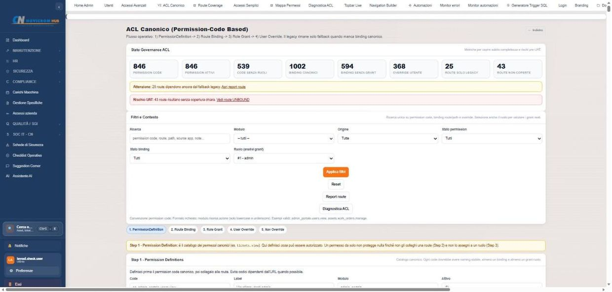
Il pannello ACL Canonico: si parte dal permesso, lo si lega alla rotta, poi al
ruolo, e in ultima istanza al singolo utente.
Creare ordini di lavoro, distribuire le giornate, rimuovere asset da un'uscita. Comprende l'esecuzione.
assets · admin_assets
Configurare attività, piani, applicazioni, gruppi. Comprende i due precedenti.
Apri il pannello Accessi del portale (area amministrazione).
Cerca il permesso per codice — ad esempio maintenance_execute.
Assegnalo al ruolo giusto (Role Grant): è la strada corretta, perché sopravvive ai
cambi di persona.
Solo per le eccezioni, usa l'override sul singolo utente.
Nota
La visibilità del menu non è una barriera di sicurezza: nascondere una voce non
protegge la pagina. È il permesso a decidere, sempre, lato server.
22 Automatismi · amministratore
Due lavori notturni e una soglia. È tutto quello che gira da solo.
Job
Quando
Cosa fa
assets_generate_occurrences
ogni giorno alle 06:00
Genera le scadenze dovute dai piani. È idempotente: rilanciarlo non crea doppioni.
Non apre ordini di lavoro.
assets_maintenance_reminders
ogni giorno alle 07:00
Manda il promemoria via email: scadute, eseguite ma senza rapporto, in scadenza, più gli
ordini aperti da troppo tempo. Gira dopo la generazione, così le scadenze nuove sono già
nella mail del giorno.
Destinatari del promemoria: si impostano in SiteConfig · assets_reminder_emails.
Se la lista è vuota il messaggio non si perde: va agli amministratori.
Soglia «aperti da oltre N giorni»: SiteConfig · assets_wo_overdue_days, di
serie 21. È la stessa soglia usata dal Cruscotto e dal promemoria — si cambia in un posto solo.
Entrambi i job si disattivano dalla Centrale di comando, e restano disattivati
anche dopo un rilascio.
Dopo ogni rilascio
Il promote non registra gli schedule: usa il pulsante 📅 Registra schedule
della Centrale di comando e riavvia il cluster django-q — il rilascio ricicla solo il
sito web. Se lo salti, gli automatismi restano fermi senza dare errore.
23 «Perché vedo questo?»
Le domande che tornano più spesso, con la risposta vera.
Ho registrato la manutenzione ma la macchina compare ancora fra le scadute.
Probabilmente hai chiuso l'intervento senza registrare le manutenzioni che
raccoglieva. Sono due gesti diversi: riapri l'intervento e usa
Registra (o Registra le selezionate) sulle righe.
Ho tolto una macchina dall'intervento: ho cancellato la sua manutenzione?
No. È tornata «da pianificare» e continua a comparire fra le dovute. È voluto.
La finestra «30 giorni» delle Scadenze è vuota, ma so che c'è del lavoro.
Quella finestra mostra solo le aperte che scadono da oggi in avanti. Se il lavoro è
già stato registrato, sta nello Storico. Per vederlo nella stessa finestra spunta
Includi concluse.
«Manutenzioni nei tempi» dice n.d.: è un errore?
No, è la risposta corretta. Vuol dire che quasi tutte le manutenzioni concluse vengono dalla
migrazione, dove la scadenza è stata dedotta dall'esecuzione. Contarle darebbe 100% e non
significherebbe nulla. Il numero comparirà da sé man mano che il portale accumula manutenzioni
generate e chiuse da lui.
Perché non vedo i costi di manutenzione da nessuna parte?
Perché quasi nessuno li compila in chiusura. Il portale preferisce dire «questo campo è
compilato sullo 0% degli interventi» piuttosto che mostrare 0,00 € come se fosse la spesa
dell'anno. Compilando costo e tempo, gli indicatori si accendono da soli.
Un collega non trova la pagina che io vedo.
È una questione di permesso, non di menu: controlla che abbia
maintenance_execute o maintenance_planning (capitolo 21).
Ho cambiato la periodicità di un piano: le scadenze già aperte si aggiornano?
Le scadenze già generate restano; la nuova periodicità vale da lì in avanti. Se una scadenza
aperta è sbagliata, registrala o rimuovila: la successiva nascerà con le regole nuove.